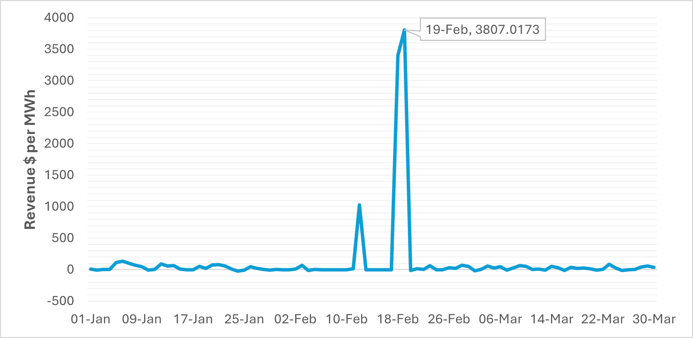
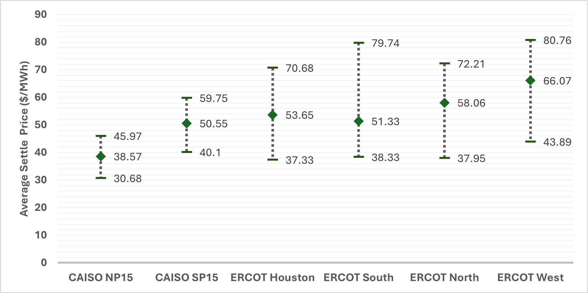
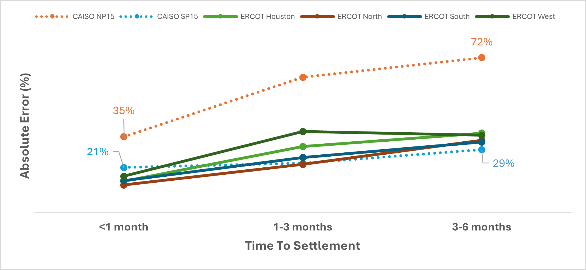
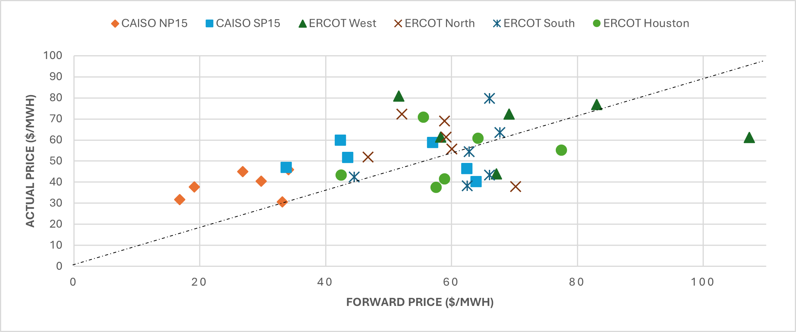

Battery storage is the fastest evolving instrument of revenue generation in US energy markets. Till December 2023, BESS revenue stacks were primarily skewed towards higher ancillary revenue percentages, but 2024 came around and showed a shift towards the predicted: higher battery penetration in the grids led to saturation in ancillary service revenues and energy arbitrage grew to more than 50% of the total revenue stack. This was forecasted and yet a major shift for the BESS marketspace.
Run Rabbit Run
The energy markets have a propensity to be defined by record-breaking peaks and volatility events, as evidenced by the most recent congestion emergency in ERCOT.
On 19th February 2025, ERCOT experienced a congestion emergency due to the outage of the Sewaju-Leande 138kV transmission line. This caused prices to skyrocket in the Round Rock area with the highest impact on two pricing nodes — one of which is the settlement point for a 9.9MW/10MWh battery, Rabbit Hill ESS. Currently owned by Ormat Technologies, this battery ended up making more than $3,600/MWh per day (a total of $72,000) from energy arbitrage in just two days, $50,000 of which came within a 30-minute window.

With volatility still a major factor in a merchant market, and energy arbitrage increasingly becoming the majority of a battery's revenue stack, we look at one out of various energy futures contracts available to BESS operators as a risk mitigating mechanism in an extremely volatile market.
Future is Now
The Intercontinental Exchange (ICE) began publishing TB4 spread futures for trading hubs in ERCOT and CAISO. Energy futures provide an excellent instrument for savvy investors to hedge their risk and secure baselines in a volatile market.
Today we look at how these contracts have performed so far, explore differences between the ERCOT and CAISO hub futures, and gain insights on any viable strategies for BESS developers and operators.
Everything's Bigger in Texas
Texas lived up to its reputation for delivering higher returns, with ERCOT's four trading hubs averaging a settlement price of $57.28/MWh in TB4 spreads, compared to CAISO's modest $44.56/MWh. ERCOT West Hub emerged as the leader, settling at an impressive $66.07/MWh average — a solid 21% premium over the rest of Texas and a whopping 51% average over CAISO.
Overall, all ERCOT hubs settled at a much higher premium compared to CAISO hubs — a 48.5% average premium over NP15 and a 13% average premium over SP15.

And true to Texas, these higher premiums came with higher volatility. Individual ERCOT hubs exhibited a coefficient of variation ranging from 18.6% to 26.9%, while CAISO's more predictable markets clustered around 14–15%. This volatility difference becomes particularly stark when viewed through a risk-adjusted lens.
Forecasting Accuracy Analysis
Despite a limited sample size, a close look at forecasting accuracy metrics reveals some insightful trends. The small data sample isn't particularly useful for generating forward outlooks, but it is quite helpful for peeking into the inner mechanisms of the energy forwards markets and highlighting stark differences between — as well as within — each ISO.

Short-Term Leaders: ERCOT's North Hub emerged as the most accurate short-term forecaster with just 12.57% error at 0–1-month horizons, followed closely by Houston Hub at 14.29%. CAISO's SP15 delivered competitive 20.69% accuracy, while NP15 struggled with 34.94% errors even at short horizons.
Time Horizon Deterioration: The most dramatic accuracy decay occurred in CAISO's NP15 contract, with errors exploding from 34.94% to 71.58% as forecast horizons extended to 3–6 months. In contrast, CAISO's SP15 showed remarkable stability, with errors rising modestly from 20.69% to just 28.98%.
ERCOT's Mixed Performance: ERCOT contracts showed varied time horizon patterns, with most exhibiting moderate accuracy degradation. West Hub displayed unusual behaviour, with errors peaking at 1–3-month horizons (37.34%) before slightly improving at longer terms (35.64%).
The Consistency Winner: CAISO SP15 demonstrated the most consistent performance across all time horizons, suggesting more robust forward curve formation processes compared to other contracts.

The data suggests an accuracy degradation pattern in ERCOT markets as forecast horizons extend, while CAISO contracts showed relatively stable performance. This suggests CAISO's forward curve formation process may be more robust to temporal uncertainty than ERCOT's merchant-driven approach.
Springboarding into Summer
ERCOT reached its highest settlement prices for the month of May, as increasing cooling demands and typical spring maintenance schedules caused grid load to increase. ERCOT peaked at $75.85/MWh while CAISO reached $41.97/MWh. But June delivered a harsh reality check, with market corrections shorting the forwards by a large margin across all hubs.

The correction was particularly severe in ERCOT, where TB4 values plummeted 46% to $40.63/MWh, suggesting that forward curves may have overestimated summer performance. In comparison, CAISO's 16% decline to $35.39/MWh proved to be more manageable.
Most striking is the systematic overestimation pattern evident across ERCOT hubs, where the majority of forecast points consistently sit above the settlement point — re-affirming optimistic summer projections that the market repeatedly failed to deliver. The sharp drop in June ERCOT settlement points confirms that even late-stage forecasts failed to anticipate the magnitude of this correction.
The Road Ahead
The TB4 futures market, though still in its infancy, has already revealed fundamental differences in how ERCOT and CAISO price energy volatility. ERCOT's higher returns come with proportional risks, while CAISO offers stability at the cost of upside capture. More importantly, the systematic forecast errors we've observed suggest these markets are still finding their pricing equilibrium.
For BESS operators, the implications are clear: location matters more than ever. The hedging value available in ERCOT during June's correction demonstrates the potential for sophisticated risk management, even if current contract liquidity limits direct implementation. Meanwhile, CAISO's persistent forecast biases create both opportunities and traps for operators depending too heavily on forward pricing signals.
As battery deployment accelerates and energy arbitrage becomes the dominant revenue stream, the ability to understand and potentially hedge spread volatility will separate sophisticated operators from the pack. The Rabbit Hill example reminds us that while $72,000 windfalls make headlines, consistent risk-adjusted returns build sustainable businesses.
The TB4 futures market may still be writing its first chapter, but the early lessons are already shaping how the next generation of energy storage operators will approach an increasingly complex and volatile landscape.